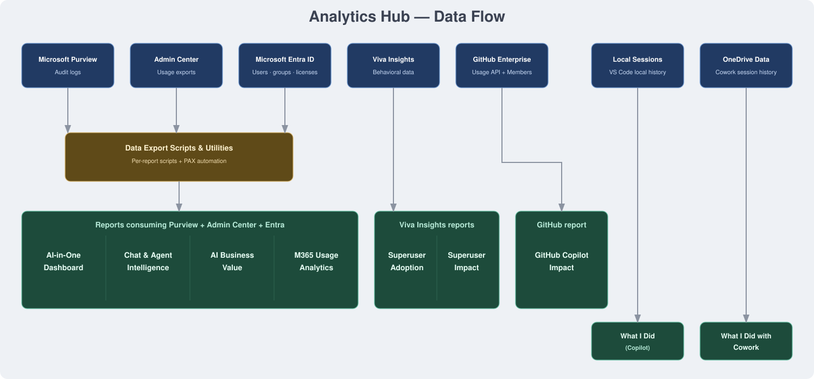

🔌 Where does the data come from?
Every byte stays in your tenant
This map shows which data sources feed which reports. Every template runs in your environment — no data is ever sent to Microsoft.
Data source
Script / Export utility
Report / Output
